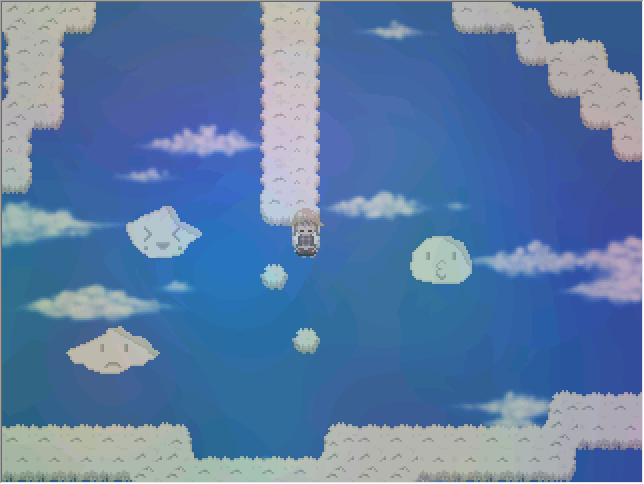

alone, with Disco and 2kki.

Disco Elysium is an game that gives one control of a broken man, and a huge amount of choice when it comes to interacting with its characters and world. you're given
the agency to.. do kinda anything. to be! -- well, not anybody, but a whole lot of body's you wouldn't expect. and despite this, i sit behind
the safety of the screen and choose to.. apologize. i wanted to right the wrongs that my character was written with, to make this broken being
i controlled whole again. likeable, even. the game recognized this, and acknowledged it by labelling me a "Sorry Cop". it subtley asked if i agreed
with this analysis and, i did. i was "one sorry piece of shit". i was tasked with 'internalizing' this thought, which spit out a slightly less bleak
outlook:
"...You let life defeat you. All the gifts your parents gave you, all the love and patience of your friends, you drowned in a neurotoxin. You let misery win. And it will keep on winning till you die -- or overcome it."
only slightly.
lately it's been easy to feel extremely alone. when i try to think about why, i tell myself the same thing i always tell others: that it's university studies, that it's the new job squeezing me into any shift they can, that i need to spend my leisure time playing a game because i'd go insane otherwise, that there's all these undefinable "things" i should be doing. it was a convenient excuse, i looked relatable that way. likeable, even. of course, the reason is partly all that. can't swallow the lie if there wasn't any truth to chew on. but i'm pretty sure it's by my own design that i feel this way.

i explore seemingly endless dreamworlds within yume 2kki. each one is strange, it's impossible to really grasp at most of what's put in front
of you. every "being" you come across will just make a small 'beep' when you try to interact with it. and there's no goal here, it's just wandering.
you get to browse the bottomless well of eerie corridors, alien doorways, and visual garbage while unexplained and incomprehensible rules force themselves on you with each room you enter.
it's all incredibly obtuse. and it all makes you feel incredibly alone.
still, when you keep your stride for long enough, you can find someplace beautiful. the droning music finds a melody, and the garbled nonsense aligns in just the right way to become a view.
you're allowed to take it all in, and stay as long as you want before treading back into the mess. it feels nice. but the loneliness stays. it's changed. it feels less like isolation and more like,
abandoned. it was once terrible because you couldn't understand anything, and becomes a shame because you can't share everything.
i kinda love it.
i've always said i'm content with my own company to everyone, and believed it. told myself it was a lucky tragedy that it was me who was always alone. as if i was 'assigned' this life, and it was a happy accident that was able to adapt to it, and was content to be the martyr for, reincarnation, or something. eheh. it's crazy how silly it sounds putting your own white lies on paper. obviously i'm no cosmic martyr (i pretty sure i'm not, anyway). and, consequently, the fact that i'm not near people very often was my doing.
and, i mean, i know all of this. on some deeper level. it's just more comforting to let the white lies do the thinking. something else happens
during those nights where i lay in bed and start picking at my brain scabs, trying to discover something about myself. i can tell that,
hey, i am a little lonely. i wish i didn't feel the need to explain myself around people. i wish i wanted to share all of my experiences with
them, and that they would want to listen. i wish something made me feel like i belonged somewhere. all that jazz. wow, am i a *lot* lonely?
the few friends i speak with on a frequent basis have become distractions from these thoughts. sometimes i forget that they're more than that, and i feel there's even less reality to grasp.
it's a shame.
anyway. i didn't really have a point to make with this post. i just wanted to spit out some thoughts from my mind. putting them into english kinda cements them better, makes them real and all that. also gives me a reason to keep this posts part of the site around, too. i hope at least some of it was comprehensible. thanks for indulging my thoughts.